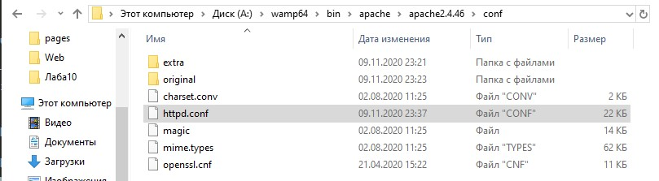
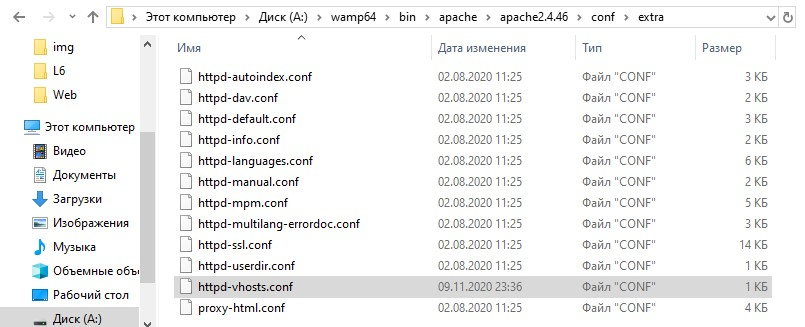
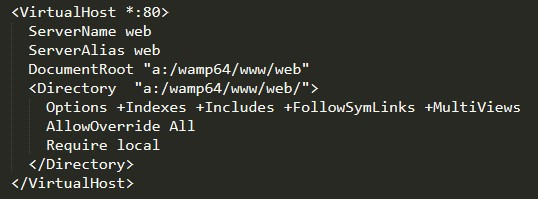
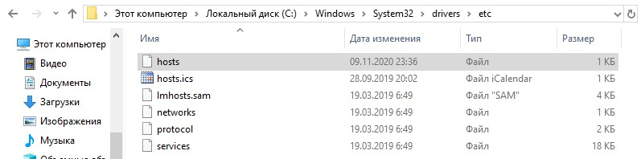
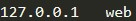
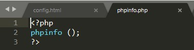
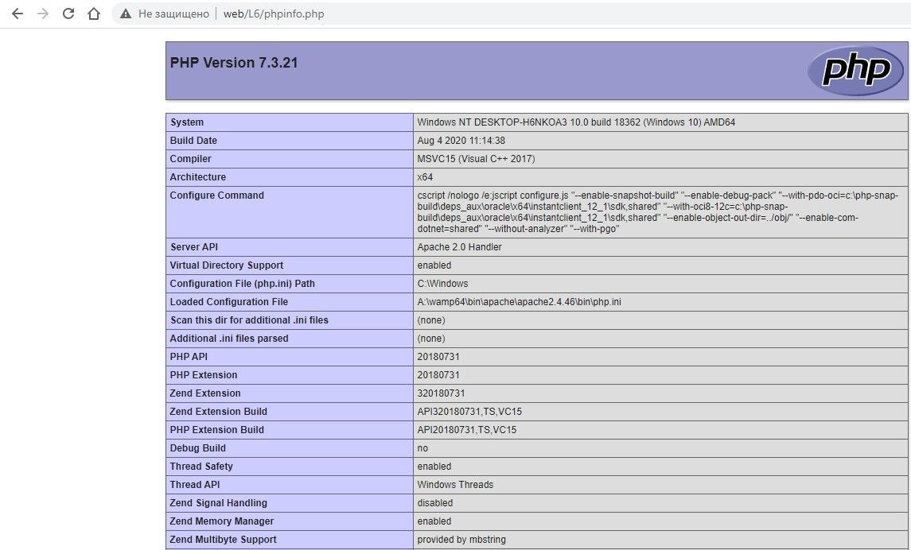
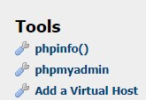
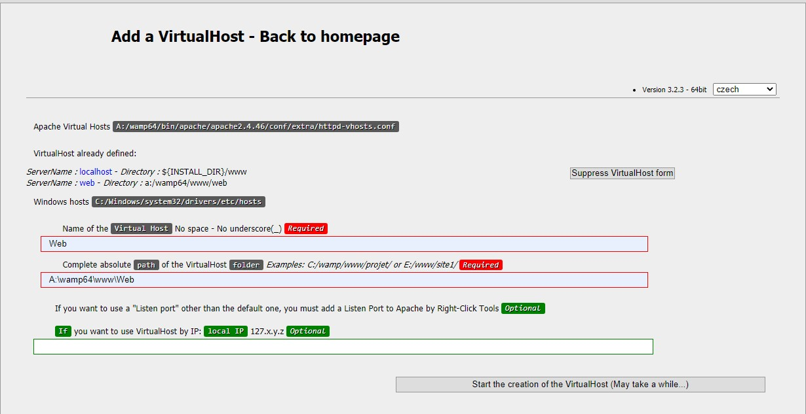
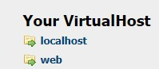

1) Переходимо до папки A:\wamp64\bin\apache\apache2.4.46\conf та відкриваємо файл httpd.conf
2)Знаходимо строки
# Virtual hosts
#Include conf/extra/httpd-vhosts.conf
Та знімаємо знак коментаря з другої строки
3) Переходимо до папки A:\wamp64\bin\apache\apache2.4.46\conf\extra та відкриваємо файл httpd-vhosts.conf
4) Додаємо наступні рядки:
5) Переходимо до папки C:\Windows\System32\drivers\etc та відкриваємо файл hosts
6) Додаємо наступні рядки:
7) Створюємо файл phpinfo.php для перевірки ресурсів нашого сайту
8) Переходимо за посиланням http://web/L6/phpinfo.php та перевіряємо
9) Налаштовуємо посилання на наш каталог для сервера
  